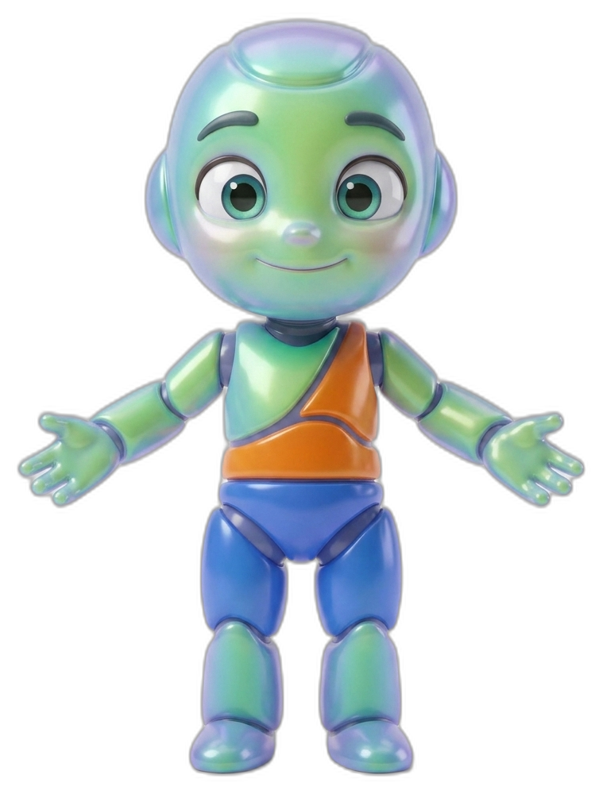
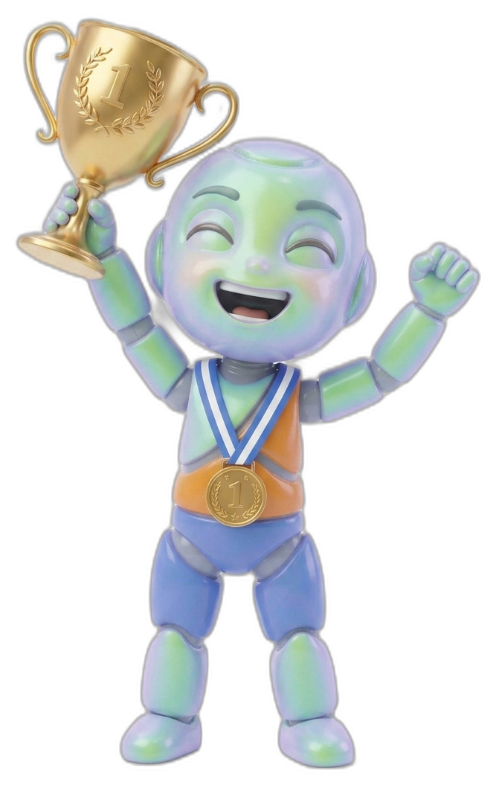

Development Programmes
Three pathways. One journey.
Every child progresses through developmental levels while earning competency-based achievements along the way.
AGES 2–4

Little Movers
Balance, coordination, and motor skills built through purposeful play. Confidence before competition.
AGES 5–8

Fundamentals
Multi-sport exposure across six sports — core athletic skills, speed, agility, and teamwork.
AGES 9–12

Performance Pathway
Sport-specific development, game understanding, leadership, and performance preparation.